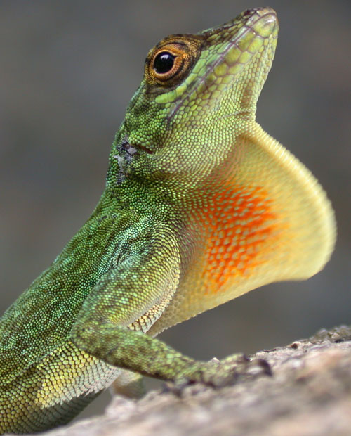
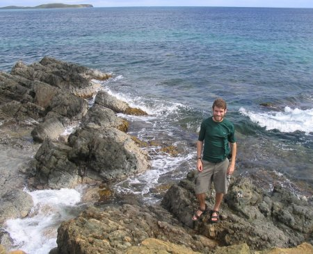

Other labs
| The Rosenblum Lab | University of Idaho Erica Bree Rosenblum's lab is adjacent to my own. We have joint lab meetings as RoHa. |
|
| The Alfaro Lab | U.C.L.A. Mike Alfaro studies ecomorphology and evolution in various species of fish. He and I are working on several projects together studying diversification across the tree of life.x |
|
|  | The
Glor Lab | University of Rochester Rich Glor studies speciation and diversification, mainly in anoles. He and I were in graduate school together. |
| The
Losos Lab | Harvard University Jonathan Losos studies adaptive radiation in anoles. He was my advisor for my PhD thesis, and a brilliant mentor. |
|
| Blake Matthews | eawag, Switzerland Blake studies the ecology of food web diversity. He is trying to convince me that plankton are cool. |
|
| The
Melville Lab | Museum Victoria Jane Melville studies ecology and evolution of reptiles and amphibians. Jane and I have an ongoing collaboration studying cross-continental community convergence. |
|
| The Mooers Lab | Simon Fraser University Arne Mooers studies phylognetic approaches to biodiversity research. He has been instrumental in our NCEAS group studying adaptive radiation. |
|
|  | The Revell Lab | UMass Boston Liam Revell studies the evolution of the G matrix, among other things. He and I are developing multivariate phylogenetic comparative methods. |
| The
Schluter Lab | University
of British Columbia Dolph Schluter is a leading scientist who studies evolutionary ecology. He was my postdoctoral advisor at UBC. |